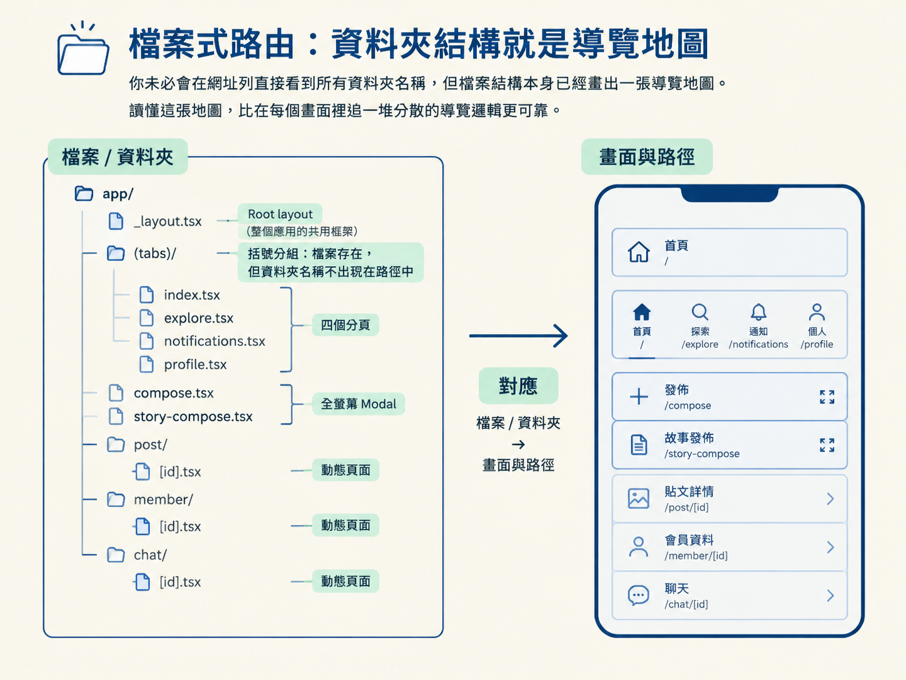
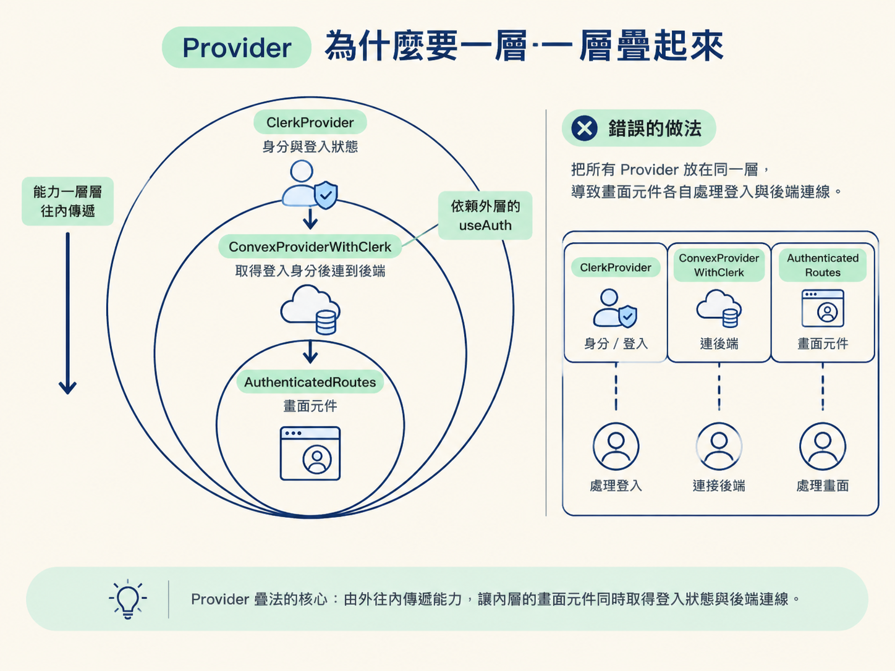
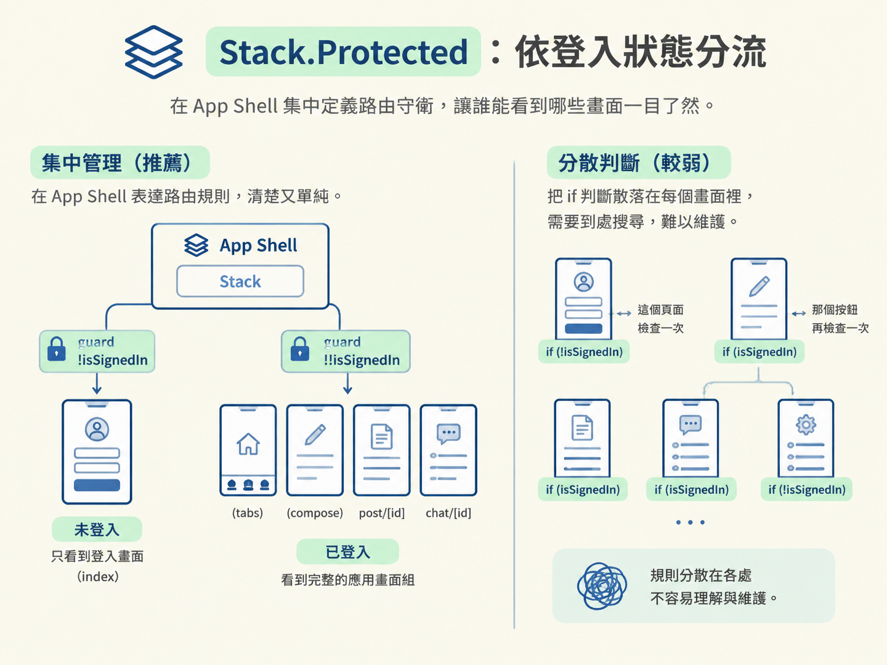

_layout.tsx 看懂 Expo Router 的 App Shell讀完這一節，你應該能看懂 Expo Router 專案的 root layout：檔案式路由如何對應畫面、Provider 為什麼要一層包一層，以及 Stack.Protected 如何依登入狀態分流。
前面四節建立了幾個重要觀念：React Native 的渲染終點是原生畫面、Expo 提供從開發到建置的工具鏈，而 native module 會決定你什麼時候必須重新建置。這些觀念如果只停在腦中，很容易彼此接不起來。
最有效的做法，是打開一個真實專案，看看它們如何一起出現在程式碼裡。這一節要讀的是 Codexgram 的 src/app/_layout.tsx。它就像整間房子的門廳：登入狀態、後端連線、錯誤監控、全域狀態容器等共用能力，都先在這裡準備好，接著才輪到各個畫面。
所以 _layout.tsx 不只是路由檔案，它把前面那些抽象觀念固定下來，也是整個 app 的 App Shell。
Expo Router 的第一個規則很直觀：app/ 目錄底下的檔案，就是 app 的路由。index.tsx 代表首頁，post/[id].tsx 代表帶有參數的動態頁面，而每一層的 _layout.tsx 則是那一層的共同外框。
這個外框可以決定該層共用哪些 Provider，以及使用哪一種導覽容器。至於像 (tabs)/ 這樣用括號包起來的資料夾，則是一種分組：裡面的畫面可以共用 layout，但資料夾名稱不會出現在路徑中。
Codexgram 的結構正是這樣展開的。最外層的 _layout.tsx 是 root layout；(tabs)/ 裡放著四個分頁；compose 與 story-compose 是全螢幕 modal；post/[id]、member/[id]、chat/[id] 則是動態頁面。
你未必會在網址列直接看到所有資料夾名稱，但檔案結構本身已經畫出一張導覽地圖。讀懂這張地圖，比在每個畫面裡追一堆分散的導覽邏輯更可靠。

打開檔案後，最上面先初始化 Sentry：
Sentry.init({
dsn: '...',
sendDefaultPii: false,
enableLogs: true,
integrations: [Sentry.feedbackIntegration({ ... })],
});這幾行會在 app 啟動時執行。Sentry 是一個 native module，因此它在 JavaScript 這一側的入口，就會出現在這個 layout 裡。這也呼應前面提過的概念：JS 端負責呼叫與包裝，native 端負責實際提供能力。
接著，root layout 讀取環境變數：
const publishableKey = process.env.EXPO_PUBLIC_CLERK_PUBLISHABLE_KEY ?? '';
if (!publishableKey) {
throw new Error('Set EXPO_PUBLIC_CLERK_PUBLISHABLE_KEY in .env and restart Expo.');
}
const convexUrl = process.env.EXPO_PUBLIC_CONVEX_URL;
if (!convexUrl) throw new Error('Set EXPO_PUBLIC_CONVEX_URL in .env.local and restart Expo.');
const convex = new ConvexReactClient(convexUrl);這裡採用的是「早失敗」的做法。設定不存在時，程式立刻丟出錯誤，而不是等到某個畫面需要登入或呼叫後端時才壞掉。
兩種做法放在一起看：把錯誤拖到深處，開發者得沿著畫面和請求一路猜；在 App Shell 啟動時就檢查，環境問題第一秒就看到了。對需要多個設定才能啟動的 app 來說，這就像進門先檢查鑰匙，而不是到了房間門口才發現根本沒帶。
接下來是真正的核心：RootLayout。
function RootLayout() {
return (
<ClerkProvider publishableKey={publishableKey} tokenCache={tokenCache}>
<ConvexProviderWithClerk client={convex} useAuth={useAuth}>
<AuthenticatedRoutes />
</ConvexProviderWithClerk>
</ClerkProvider>
);
}這個順序有它的原因：能力之間有依賴關係。
Clerk 負責身分與登入狀態；Convex 則需要知道目前登入的是誰，才能以正確的身分連到後端。所以 ConvexProviderWithClerk 必須放在 ClerkProvider 裡面，並把 useAuth 傳給它。
這樣一來，內層的 AuthenticatedRoutes 才能同時取得登入狀態，以及已經連好的 Convex client。Provider 疊法可以想成一組由外往內傳遞的能力：外層先準備環境，內層再取用這些環境。

如果把它們全部平放在同一層，畫面元件就得自己處理登入、後端連線與依賴順序。這會讓每個畫面各自長出一套判斷，最後變成難以維護的分散式 App Shell。
Stack.Protected：依登入狀態分流再往裡看 AuthenticatedRoutes。它先透過 useAuth() 取得登入資訊：
const { isLoaded, isSignedIn, userId } = useAuth();
if (!isLoaded) {
return <View style={styles.loading}><ActivityIndicator ... /></View>;
}登入狀態還沒準備好以前，先顯示載入畫面。這一步很重要，因為此時程式還不知道使用者是誰；如果太早渲染受保護的畫面，就可能先做出錯誤的路由判斷。
狀態準備好之後，再用一個 Stack 定義路由，並透過 Stack.Protected 的 guard 把畫面分成兩組：
<Stack.Protected guard={!isSignedIn}>
<Stack.Screen name="index" />
</Stack.Protected>
<Stack.Protected guard={!!isSignedIn}>
<Stack.Screen name="(tabs)" />
<Stack.Screen name="compose" options={{ presentation: 'fullScreenModal' }} />
<Stack.Screen name="post/[id]" />
<Stack.Screen name="chat/[id]" />
</Stack.Protected>未登入時可以看到 index，也就是登入畫面；登入後，才可以進入分頁、發文與聊天。這裡還有一組使用 __DEV__ 作為 guard 的 design-preview，只會在開發模式出現。
弱一點的做法，是把登入判斷散落在每個畫面裡：這個頁面檢查一次，那個按鈕再檢查一次。強一點的做法，則是在 App Shell 集中表達路由規則。誰能看到哪一組畫面，在同一個地方就能讀懂，不必到處搜尋 if。

key檔案最後還有一個容易被忽略的細節：MessagesProvider 使用 key={userId ?? "signed-out"}。
在 React 裡，當 key 改變時，React 會把這個子樹整個重新掛載。換句話說，使用者從 A 切換成 B 時，訊息相關的狀態不會繼續留在原本的子樹裡，避免新使用者看到上一位使用者留下的狀態。
最後，export default Sentry.wrap(RootLayout) 將整個 layout 交給 Sentry 包裝與監控。從啟動、環境檢查、Provider 疊加，到路由守衛與錯誤監控，root layout 就像把 app 的骨架和公共設施集中在同一個入口。
如果你用過 Next.js 的 layout.tsx，Expo Router 的概念並不陌生。兩者都是共用外框，也都適合放全域 Provider 與導覽相關設定。
差別在於它們面對的邊界不同。Next.js 的 layout 涉及 server component 與 client component 的分界，許多事情會發生在伺服器；Expo Router 的 layout 則是原生導覽的分界，整個 app 都在手機上執行，沒有 server component 這一層。
因此，可以把 Expo Router 的 _layout.tsx 理解成：把 Next.js 的 layout 概念搬到原生導覽的世界。它同樣是共用外框，但裡面承載的是手機 app 的登入、原生能力、後端連線與畫面切換。
_layout.tsx是 Expo Router 的 App Shell：app/底下的檔案結構就是路由地圖，每一層的_layout.tsx是那層共用的外框。Root layout 把 Sentry、Clerk、Convex 一層層疊起來，讓內層取用；再用Stack.Protected依登入狀態決定看得到哪些畫面。之後每個 app 都會從這個骨架上長出來，只要知道 auth、後端、監控、全域狀態該掛在哪裡。
讀自己的 Expo app 時，可以先從 root layout 開始問幾個問題：路由地圖如何分組？哪些 Provider 必須放在外層？哪些畫面需要登入後才能進入？哪些 native module 在 app 啟動時就要初始化？
這樣看 _layout.tsx，它就是整個 app 的結構說明書，不只是 Expo Router 的特殊檔名。到這裡，這個節點的五步完成了：你知道 React Native 的渲染終點、Expo 的工具鏈、native module 與重建之間的關係，也能在動手前判斷一個功能是否會逼你離開 Expo Go。下一個節點，會把這個骨架真正搭起來，看看 agent 如何協助完成實作。